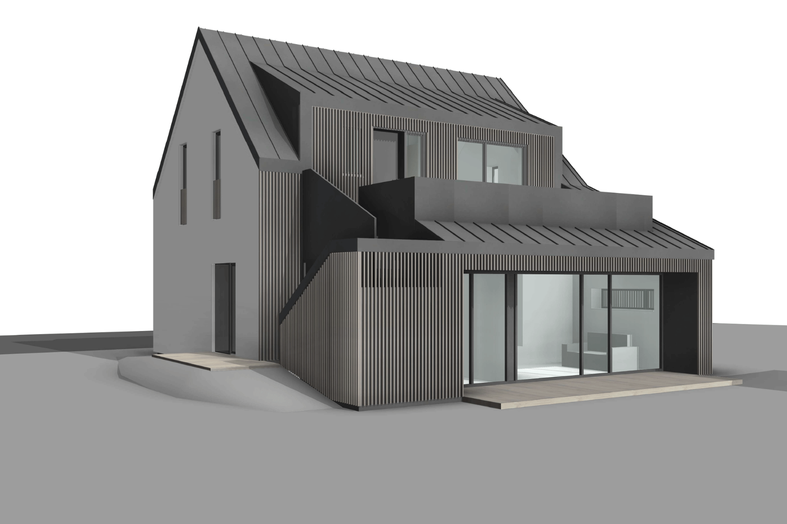
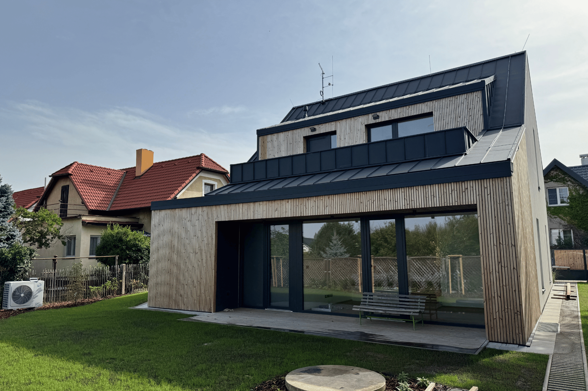

Ing. arch.František Hanf
Portfolio
2014 — 2026
Od skici k realizaci.
Příprava, povolování a řízení stavebních projektů — architekt, který umí projekt připravit, povolit i uřídit, a firmu k tomu.
588bytů · Port Karolína pro Skanska — od konceptu po autorský dozor
2 × 200mil. Kčpřipravené rekonstrukce · zámek Dobříčany, poliklinika Praha 4
12lidí v týmu technologické firmy, kterou jsem založil a vedl
02
Rezidenční development · studie pro Skanska Reality · 2019
Centrum Loděnice
Obytný soubor v centru obce u Husova náměstí. Velký objem vložený do drobné struktury malého města: koncept navazuje na historickou stopu uzavřených statků, bloky chrání vnitrobloky a přízemí u náměstí nese ordinace a komerci.
142bytů · 2kk 25 %, 3kk 64 %, 4kk 11 %
13 565m²hrubá podlažní plocha · ČBP 10 259 m²
244parkovacích stání · polovina v suterénu
Moje role
Urbanisticko-architektonický koncept, bilance ploch a bytů, prověření souladu s územním plánem a přesnými parametry zadanými developerem; zpracování variant řešení.
Fáze
Architektonická studie ve více variantách podle zadání investora.
22:22 architekti · Skanska Reality a.s. · Loděnice, Středočeský kraj
03
Příprava projektu · zdravotnictví · Praha 4 · 2022 — 2026
Poliklinika Tajovského
Rekonstrukce a nástavba tří pavilonů montovaného skeletu na sídlišti Krč, u budoucího vestibulu metra D. Nový program: 25 ordinací, lékárna, konferenční centrum, kavárna a dětská skupina. Výstavba fázovaná tak, aby péče nebyla přerušena.
200mil. Kčplánovaný investiční náklad
2 469m²navržená užitná plocha · z původních 1 093 m²
2fáze výstavby za provozu zařízení
Moje role
Vedení celé přípravy: zadání investičního záměru, průzkumy, varianty návrhu, architektonická studie, předjednání s úřady, výběr dodavatele projektové dokumentace a dodavatele realizace stavby.
Stav
Investor projekt pozastavil před zahájením realizace; příprava dokončena včetně vybraných dodavatelů.
Ing. arch. František Hanf · spolupráce M. Seigert, J. Ducheček · Zdravotnické zařízení Tajovského 1310
04
Památková obnova · Atelier Hanf · 2015
Zámek Dobříčany
Záchrana ohrožené památky ze 16.–18. století v havarijním stavu. Studie víceúčelového využití: hotel, restaurace, společenský sál, podnikatelský inkubátor, chráněné dílny a wellness. Nový hlavní vstup a prosklená přístavba mezi křídly, řešeno s památkáři.
200mil. Kčinvestiční objem
3 270m²užitné plochy ve čtyřech podlažích
120osob sál · 20 lůžek · 50 míst restaurace
Moje role
Vedení studie v ateliéru s pěti lidmi: digitalizace pasportu a 3D model, koordinace profesí (ÚT, VZT, gastro, doprava), jednání s památkáři a stavebním úřadem, předání navazující projekční kanceláři.
Stav
Studie odevzdána, vybrán dodavatel projektové dokumentace; projekt zastaven po finančních problémech investora.
Atelier Hanf · garant Ing. Pavel Bartoš · Nadační fond Horizont · Dobříčany, okr. Louny
05
Rezidenční development · Skanska · Praha-Karlín · 2014 — 2019
Port Karolína
Bytový soubor s 588 byty v rozvojovém území Rohanského ostrova. Projekt jsem provázel pěti lety a dvěma ateliéry: od koncepce a studie po prováděcí dokumentaci, detaily a autorský dozor na stavbě.
588bytů
5letod koncepce 2014 po dozor 2019
SkanskaReality · investor a generální dodavatel
Moje role
V Di5 koncepce a architektonická studie objektu; ve 22:22 architekti prováděcí dokumentace, detaily vnitřních prostor a parteru, autorský dozor na realizaci.
Stav
Realizováno.
Di5 architekti inženýři · 22:22 architekti · Skanska Reality a.s.
06
Rezidenční development · koncepce pro developery · Di5 · 2014
Bytové domy Lehovec, Křivoklátská, Eldorado
Tři koncepce bytových domů pro developery. Lehovec: dvě osmipodlažní sekce na hlučném pozemku u Kolbenovy — hmotu určila akustika, protilehlé deskové domy a zasklené pavlače vytvářejí tiché atrium, do kterého se otáčí všechny byty. Prověřeno na koeficienty územního plánu.
144bytů · Lehovec, dvě sekce 8 NP
13 280m²HPP · čistá bytová plocha 7 205 m²
140–150mil.Kč · odhad stavebních nákladů
Moje role
Spoluautor koncepcí v týmu Di5 — hmotové varianty, akustické řešení, dispozice a bilance, soulad s územním plánem.
Fáze
Koncepce návrhu stavby s cenovou nabídkou pro developera, varianty bytové skladby.
Di5 architekti inženýři · Votřel, Vaňková, Hanf, Běloušek · Praha
07
Rodinný dům · od zadání po klíče · Praha-Dolní Počernice · 2022 — 2026
Rodinný dům Dolní Počernice
Zadání znělo: tento pozemek, tento rozpočet. Vše ostatní — analýza pozemku a možností výstavby, formulace zadání, studie, zadání dokumentace pro stavební povolení a dohled na stavbě od začátku do konce — bylo na mně. Jediný projekt ve výběru, kde vedle vizualizace stojí fotografie hotového domu.
144m²užitné plochy
4,5letod zadání 2022 po dokončení 2026
1architekt od analýzy pozemku po předání
Moje role
Analýza pozemku a zhodnocení možností výstavby, formulace zadání z podkladů a výpočtů, architektonická studie, zadání dokumentace pro stavební povolení, dohled na stavbě od zahájení po dokončení.
Stav
Dokončeno 2026.
Ing. arch. František Hanf · soukromý investor

Studie · 2022

Realizace · 2026
08
Urbanismus a rodinné domy · vítězná soutěž · Rotterdam · 2018
Alexianer — nová obytná čtvrť
Soutěžní návrh čtvrti s více než 35 rodinnými domy, zpracovaný během stáže Erasmus pro mladé podnikatele v rotterdamském ateliéru ve spolupráci s architekty Hankem Döllem a Nielsem Olivierem. Návrh v soutěži zvítězil.
35+rodinných domů
1.místo v soutěži
Revitkompletní 3D model čtvrti
Moje role
Vypracování celého 3D modelu, návrh jednotlivých rodinných domů a výtvarný vzhled objektů.
Kontext
Mezinárodní tým, práce v angličtině, Revit v urbanistickém měřítku.
Hank Döll · Niels Olivier · František Hanf · Rotterdam, Nizozemsko
09
Horská architektura · studie · 22:22 architekti · Krkonoše · 2019
Horská bouda Šestidomí
Studie horského objektu v Krkonoších: od průzkumu a dokumentace stávajícího stavu po architektonickou studii nového řešení v exponovaném horském prostředí.
2019studie
3fáze · průzkum, stávající stav, návrh
KRNAPchráněné území · přísné regulativy
Moje role
Průzkum a dokumentace stávajícího stavu, architektonická studie.
22:22 architekti · Krkonoše
10
Technologická firma · produkt od nuly do provozu · 2023 — 2026
FerdiGo
Software pro půjčovny pracovních strojů — obor, kde mnohamilionové firmy fungovaly na papíru a nevěděly, kde mají stroj za milion. Z rozvoje jedné půjčovny vzniklo zadání, z něj firma, tým a produkt.
12lidí v týmu
500+strojů v systému
3rokyod prvního zadání 08/2023 po řízené předání
Moje role
Založení a vedení firmy: analýza procesů půjčoven, zadání a koordinace vývoje, prodej, onboarding klientů, klientská podpora, rozpočet a cashflow, jednání s investory.
Proč v portfoliu staveb
Řízení produktu, týmu a peněz je stejná disciplína jako řízení projektu — jen s jiným materiálem.
FerdiGo s.r.o. · výkonný ředitel a jednatel
František Hanf
Architekt · Project manager · Ing. arch. ČVUT
Rád vám projekty představím osobně. Kompletní dokumentace ke všem uvedeným projektům je k dispozici na vyžádání.
+420 602 377 958 · frantisek.hanf@gmail.com · linkedin.com/in/frantisekhanf